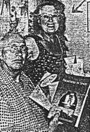
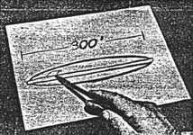

Il existe un homme à Redondo Beach disant avoir été à bord d'une soucoupe volante 11 fois. Ce n'est pas tout, il
pr�voit de prendre un vol dedans pour une planète �loign�e la prochaine fois qu'il voit la demoiselle capitaine et
prend des arrangements. Ce voyage, une fois arrang�, emen�ra Truman Bethurum, 55 ans,
de 519 N. Gertruda Avenue, Redondo Beach, sur la planète Clarion. Aura Rahnes, la capitaine de la soucoupe volante
dont il fit la connaissance l'année dernière, a promis à Bethurum un vol spatial jusqu'�
la lointaine planète.
Melle Rahnes, qui dit avoir 2 petits-enfants de retour sur la planète Clarion, dit à Bethurum que le voyage à travers l'espace prendrait "environ 2
nuits", ou en d'autres mots, environ 48 h. Bethurum dit avoir fait la connaissance de la
femme capitaine de la soucoupe volante en JuinJuillet , alors qu'il travaillait sur la
construction d'une route près de Mormon Mesa. Mormon Mesa est située près de la Nationale 91 dans le Nevada à environ
70 miles de Las Vegas. Mais pour tous les détails de l'expérience de Bethurum sur la soucoupe volante nous commencerons du début.
La propre histoire de Bethurum
11 visites dans une soucoupe volante - sont proclam�es par Truman
Bethurum, (ci-dessus) 519 N. Gertruda Avenue, Redondo Beach. Bethurum, 55 ans,
prèsent� avec sa femme, Mary, parla à un journaliste du Daily Breeze de 11 visites à bord d'une soucoupe
volante qu'il contacta en juin 1952 dans le d�sert du Nevada. Depuis lors il a été bombard� par tous types de
fiction et littérature scientifique sur l'espace

Ici, alors, est l'histoire de Bethrurum telle que racont�e à un journaliste du Daily Breeze. Avant qu'il
commence l'histoire, cependant, Bethurum assura le journaliste qu'il n'était pas un
homme qui buvait et qu'il n'avait jamais été dans un costume serré ou confin� dans quelque institution.
En JuinJuillet , Bethurum commen�a à travailler pour E. E.
"Whitey" Edwards, un vieil ami, qui dirigeait la construction d'une route par la Wells Cargo Construction Co. près de
la jonction de Glendale (Nevada). Le travail était bien entam�, se souvient Bethurum, et il fut transferr� à une position de m�canicien de nuit
sur les camions à eau.
Une nuit, le ou le , Bethurum avait
termin� son travail et décida de visiter le sommet d'une colline voisine parce qu'il avait entendu que l'oc�an l'avait
recouvert une fois et y avait d�pos� des coquillages. Il était environ 3 h 30 lorsqu'il gara son camion et utilisa une
lampe-torche pour chercher des coquillages. Il chercha pendant sans succès et retourna donc à son
camion pour dormir un moment.
Soudain il fut r�veill� par un murmure autour du camion. Le murmure était inintelligible. Bethurum regarda dehors par la fenêtre et vit 8 à 10 petits hommes,
d'environ 4 pieds 8 pouces à 5 pieds de haut. Ce n'étaient pas des nains, mais des hommes pleinement développés,
dit Bethurum.
'You Name It'
Les petits hommes ne firent aucun effort pour le molester. Bethurum dit qu'il eut peur
de tenter une fuite. Il était toujours dans la cabine du camion. 1 homme lui parla dans une langue étrang�re. Bethurum secoua la tête, indiquant qu'il ne comprenait pas.
Le petit homme dit alors : You name it. C'était un anglais parfais, se souvient Bethurum, qui répondit : Mon Dieu, vous pouvez aussi parler anglais
? Nous n'avons aucun problème avec votre langue, répondit l'homme.
Bethurum descendit alors du camion et s'arrêta, stup�fait. Il fit une soucoupe volante
gar�e à 75 yards environ de son camion. Elle avait l'apparence d'acier poli inoxidable. Bethurum dit que son c?ur battait si fort que Je pensais que
j'allais mourir.
Cependant, il serra les mains de tous les hommes amicaux et demanda si leur capitaine était dans les environs.
Le porte-parole du groupe se porta volontaire pour escorter Bethurum au capitaine, et
l'amena vers le vaisseau spatial gar�.
Dans le m�me temps, Bethurum regarda alentour et vit que les petits hommes était de type
Latin, c'est-à-dire, avec des teints comme des Italiens. Tous étaient soigneusement habillés d'uniformes
semblables à ceux port�s par les conducteurs de bus Greyhound. Tous avaient des cheveux noir charbon et des
yeux fonc�s. Ils avaient une belle peau - une peau qui ne contenait aucune ride ou d�fauts.
Le vaisseau spatial
Drawing of Space Ship - Shows dimensions of flying saucer from the planet Clarion, reportedly seen by Bethurum
last year. He said the "scow" appeared to be made of bunished stainless steel. It measured 300 feet in diameter
and was 18 feet thick at the center. It contained a crew of 32 men and a woman captain. The rough drawing shows
exaggerated thickness.

Le porte-parole pour le groupe tenait le coude droit de Bethurum. Alors qu'il tenait le
bras gentiment, dit Bethurum, l'homme semblait m'avoir complètement en son pouvoir. Il donna l'impression d'une
grande force.
Bient�t le groupe arriva au vaisseau spatial. Bethurum le d�crivit comme fait d'un
certain type de m�tal. Il appara�t qu'il mesurait 300 pieds de diamêtre et avait 6 yards de profondeur au
centre. Un anneau m�tallique de 3 pieds avec des bords biseaut�s entourait le vaisseau en forme de soucoupe.
L'anneau, dit Bethurum, faisait près de 2 pieds d'�paisseur. Le vaisseau n'avait aucun
gouvernail ou [stacks].
Ils entr�rent dans le vaisseau par une large porte que Bethurum estima faire 4 pieds 1/2
de large et 10 à 12 pieds de long. Elle était située sur le vaisseau près de l'anneau de m�tal autour du bord. A
l'intérieur, il rencontra une femme capitaine, Aura Rahnes. Il la d�crivit comme ayant un visage mince de type
Latin. Elle portait une jupe rouge radiante, chemisier court-gain� de velours noir et un b�r�t noir avec un [trim]
rouge.
Il entra dans son salon et discuta. La femme capitaine dit qu'elle venait de la planète Clarion, qui ne pouvait être
vue depusi la Terre m�me avec une magnification progressive, que Bethurum
interpreta comme la signification d'un t�lescope. Elle dit également que la planète n'était pas connue par le peuple
de la Terre par un autre nom - tel que Mars. Sur Mars : Elle dit qu'elle était peupl�e et contenait une
atmosphère, une industrie et des foyers. Elle dit que le peuple sur Mars n'avait pas besoin de quelque appareillage spécial
de respiration.
� ce moment Bethurum prit conscience que les Clarionites de la soucoupe volante n'avaient
pas besoin de dispositif de respiration.
Appelez-les "Scows"
Le femme capitaine, dit Bethurum, expliqua qu'il était seulement re- (suite Page 2,
colonne 3)...